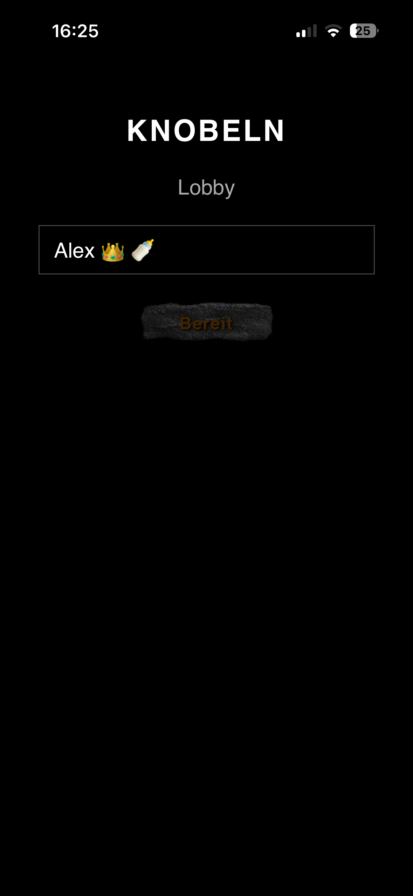
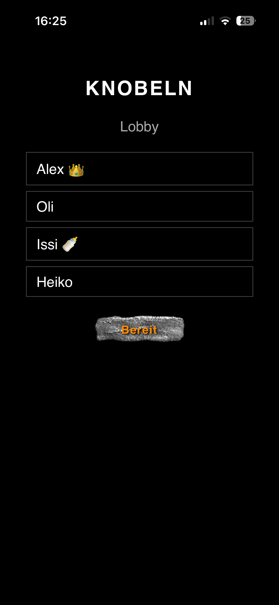
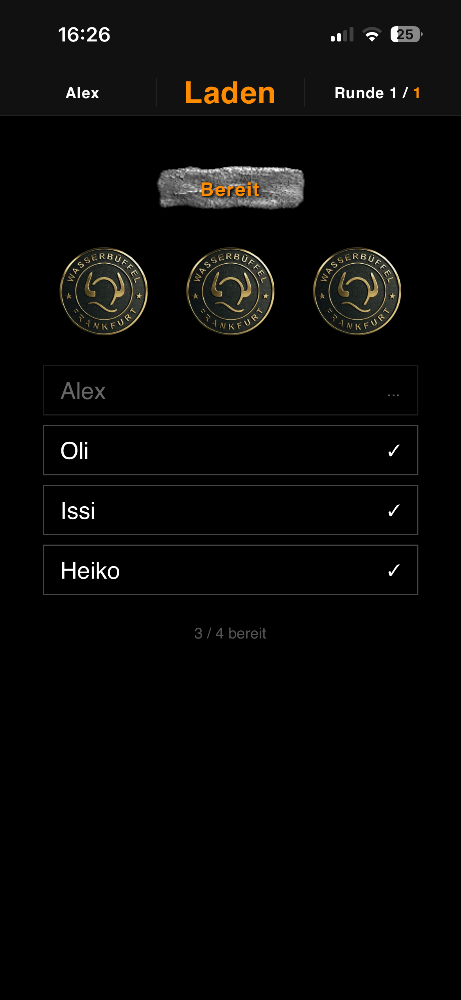
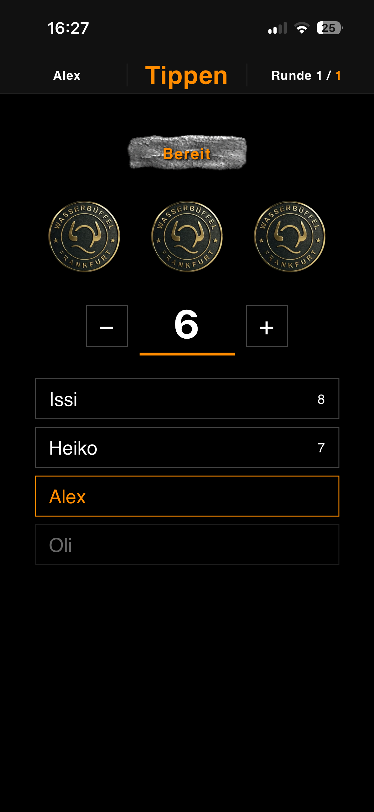
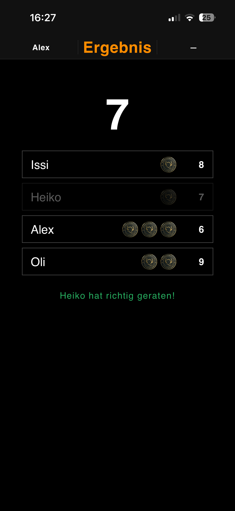
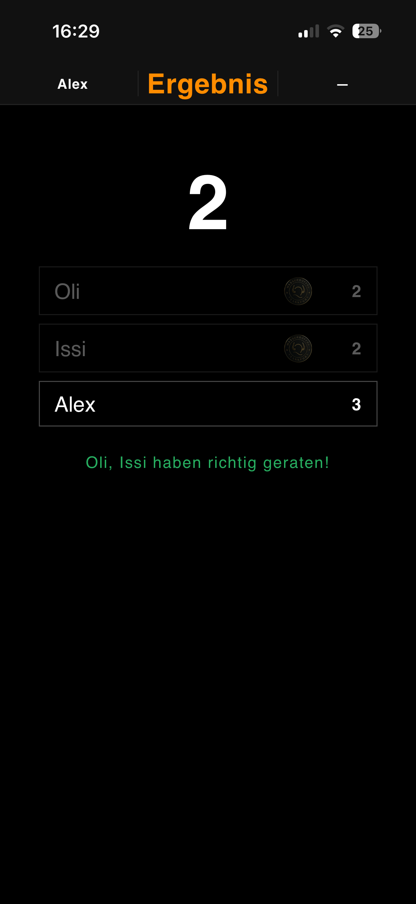
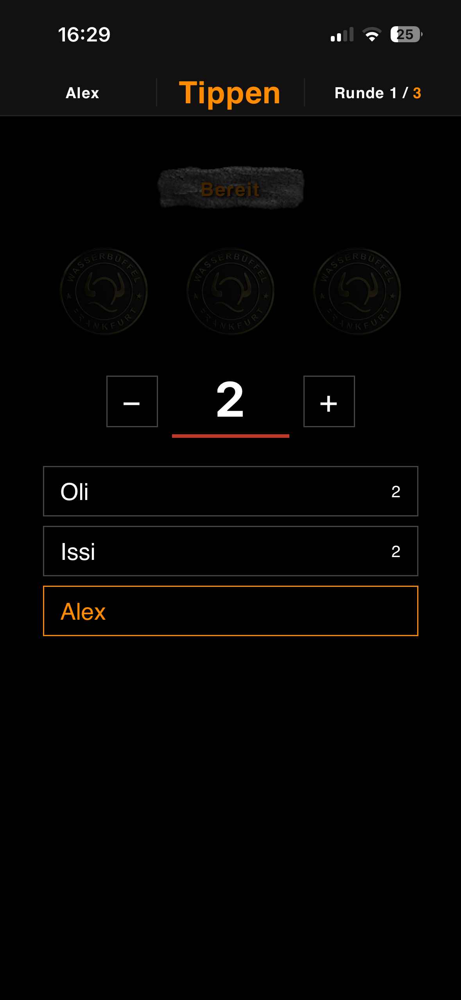
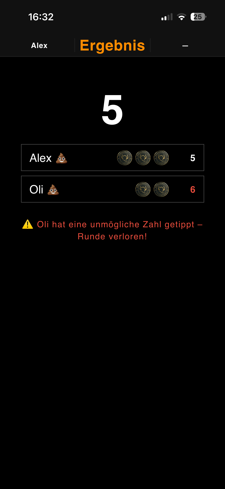
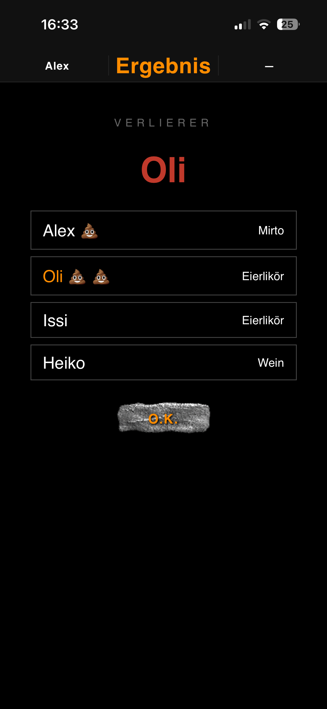

Die Statuszeile oben zeigt immer den aktuellen Spieler, die Phase und den Spielfortschritt:
Die Gesamtanzahl der Spiele pro Runde steht in Orange.
Jeder Spieler gibt seinen Namen ein und drückt den Bereit-Knopf.
Alle Spieler sehen die Teilnehmerliste. Der Host 👑 startet das Spiel mit dem Bereit-Knopf. Der jüngste Spieler ist mit 🍼 markiert.


Jeder Spieler wählt verdeckt 0 bis 3 Münzen. Angeklickte Münzen werden geladen. Mit dem Bereit-Knopf wird die Auswahl bestätigt.

Spieler, die bereits richtig geraten haben, schauen nur zu (DU SCHAUST ZU) und werden mit 💩 markiert.
Reihum rät jeder Spieler, wie viele Münzen insgesamt geladen wurden. Mit den +/− Tasten einstellen und mit Bereit bestätigen.

Die Gesamtzahl der Münzen wird angezeigt. Wer richtig geraten hat, erhält ✓ und kommt in den Zuschauermodus (💩). Der letzte Verbliebene verliert das Spiel.


Die Verlierer von Runde 1 und Runde 2 spielen gegeneinander. Alle anderen schauen zu. Der Verlierer von Runde 1 beginnt.


Wer eine unmögliche Zahl tippt (mehr als maximal mögliche Münzen) verliert das Spiel sofort.
Der Verlierer wird groß angezeigt. Daneben erscheinen alle Mitspieler mit ihrem Lieblingsgetränk. Mit O.K. startet ein neues Spiel.

Der Verlierer trägt zwei 💩💩 wenn er das Endspiel verloren hat.
Unter localhost:8080/datenbank.html können Spieler mit Name, Geburtstag und Lieblingsgetränk verwaltet werden. Der Geburtstag bestimmt, wer 🍼 anfängt.